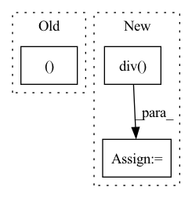

Pattern ID :1293
Before Change
// returing:
// GPT2Model/Block[2]/MLP[mlp]/Dropout[dropout]
// GPT2Model/Block[2]/aten::add5567
return (self.l_29(self.l_28(torch.mul(input=torch.mul(input=t_33, other=0.5), other=torch.add(input=Tensor.tanh(torch.mul(input=torch.add(input=t_33, other=torch.mul(input=Tensor.pow(t_33, exponent=3), other=0.044715)), other=0.7978845608028654)), other=1)))), t_32 )
def state_dict(self,device=None):
// we return the state dict of this part as it should be in the original modelAfter Change
// calling torch.div with arguments:
// GPT2LMHeadModel/GPT2Model[transformer]/Block[3]/Attention[attn]/aten::matmul5854
// GPT2LMHeadModel/GPT2Model[transformer]/Block[3]/Attention[attn]/prim::Constant5855
t_39 = torch.div(input=Tensor.matmul(Tensor.permute(Tensor.view(t_36, size=[Tensor.size(t_36, dim=0), Tensor.size(t_36, dim=1), 12, torch.div(input=Tensor.size(t_36, dim=-1), other=12)]), dims=[0, 2, 1, 3]), other=Tensor.permute(Tensor.view(t_37, size=[Tensor.size(t_37, dim=0), Tensor.size(t_37, dim=1), 12, torch.div(input=Tensor.size(t_37, dim=-1), other=12)]), dims=[0, 2, 3, 1])), other=8.0)
// calling Tensor.size with arguments:
// GPT2LMHeadModel/GPT2Model[transformer]/Block[3]/Attention[attn]/aten::div5856
// GPT2LMHeadModel/GPT2Model[transformer]/Block[3]/Attention[attn]/prim::Constant5860
t_40 = Tensor.size(t_39, dim=-1)In pattern: SUPERPATTERN
Frequency: 3
Non-data size: 3
Instances Fragment ID: 4547652
Project Name: saareliad/ftpipe
Commit Name: 9ddf98456ca57cac3a4a982fc519c5a71642dc25
Time: 2020-03-10
Author: saareliad@campus.technion.ac.il
File Name: models/partitioned/gpt2.py
M Class Name: Partition0
N Class Name: Partition0
M Method Name: forward(2)
N Method Name: forward(2)
M Parent Class: nn.Module
N Parent Class: nn.Module
M File Name: models/partitioned/gpt2.py
N File Name: models/partitioned/gpt2.py
M Start Line: 460
M End Line: 467
N Start Line: 396
N End Line: 430
Before Change
// [B, T, D] -> [B, C=1, T, D]
x = x.unsqueeze(1)
x, x_len = self.conv1(x, x_len)
x, x_len = self.conv2(x, x_len)
// 将数据从卷积特征映射转换为向量序列
x = x.permute(0, 2, 1, 3) // [B, T, C, D]After Change
x = self.conv(x)
x = x.permute(0, 2, 1, 3) // [B, T, C, D]
x = x.reshape([x.shape[0], x.shape[1], -1]) // [B, T, C*D]
x_len = torch.div(torch.div( (x_len - 1), 2, rounding_mode="trunc") - 1, 2, rounding_mode="trunc")
return x, x_len
Fragment ID: 4547649
Project Name: yeyupiaoling/masr
Commit Name: 2f53f43f4a79f84d65681f2f8ba49f00e0cb39d6
Time: 2022-10-24
Author: yeyupiaoling@foxmail.com
File Name: masr/model_utils/deepspeech2/conv.py
M Class Name: ConvStack
N Class Name: Conv2dSubsampling4Pure
M Method Name: forward(3)
N Method Name: forward(3)
M Parent Class: nn.Module
N Parent Class: nn.Module
M File Name: masr/model_utils/deepspeech2/conv.py
N File Name: masr/model_utils/deepspeech2/conv.py
M Start Line: 50
M End Line: 58
N Start Line: 16
N End Line: 21
Before Change
:return:
pos_head, pos_rel, pos_tail = pos_exmpl
neg_head, neg_rel, neg_tail = neg_exmpl
pos_head_emb = self.entities_embeddings(pos_head)After Change
// Normalise embeddings of normal vectors
norms = torch.norm(self.normal_vector_embeddings.weight, p=2, dim=1).data
self.self.normal_vector_embeddings.weight.data = self.self.normal_vector_embeddings.weight.data.div(
norms.view(self.num_relations, 1).expand_as(self.self.normal_vector_embeddings.weight))
// TODO: Check indexing
pos_heads, pos_rels, pos_tails = batch_positives
neg_head, neg_rel, neg_tail = batch_negatives Fragment ID: 4547646
Project Name: pykeen/pykeen
Commit Name: cb5e375b88bcd5599ec8671b59d31aa3f2404cce
Time: 2018-09-20
Author: ali-mehdi@live.de
File Name: src/kg_embeddings_model/trans_h.py
M Class Name: TransH
N Class Name: TransH
M Method Name: forward(3)
N Method Name: forward(3)
M Parent Class: nn.Module
N Parent Class: nn.Module
M File Name: src/kg_embeddings_model/trans_h.py
N File Name: src/kg_embeddings_model/trans_h.py
M Start Line: 86
M End Line: 96
N Start Line: 118
N End Line: 133